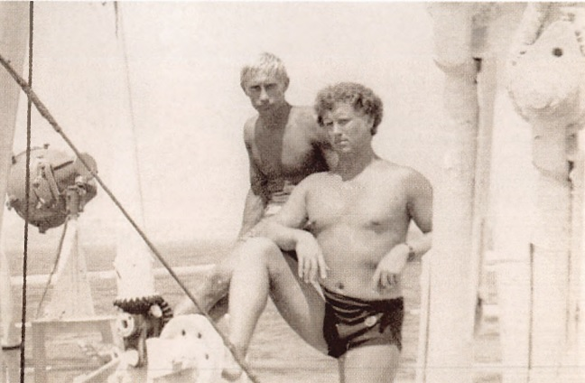
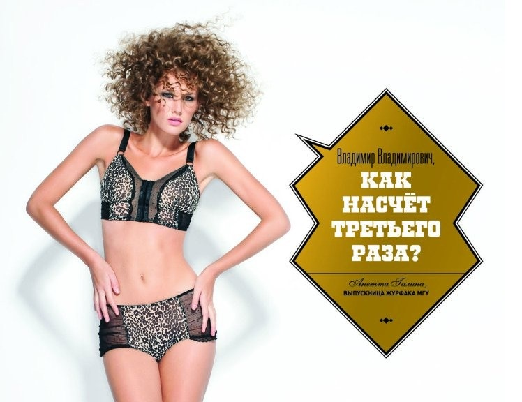
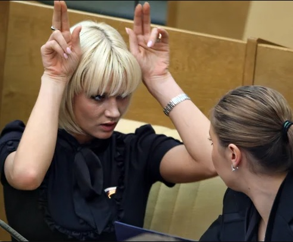
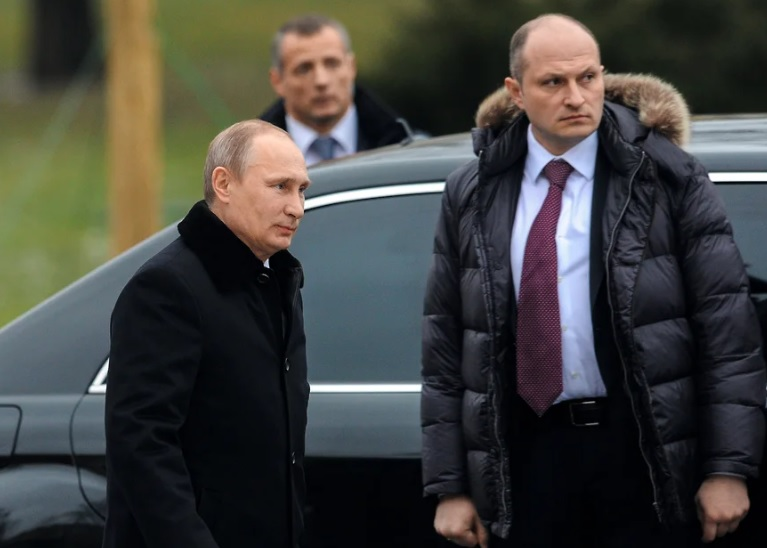
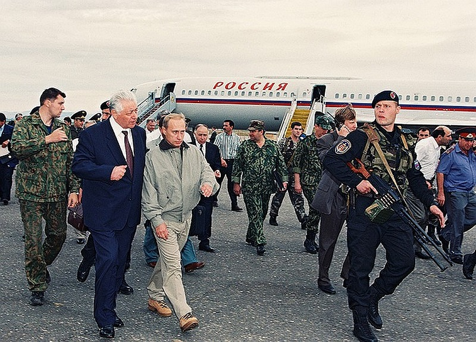

Есть вещи, которые находятся на виду, но их не замечаешь. А потом увидишь и не сможешь развидеть никогда.
Вот смотрите, Владимир Путин — гей.
Это правда, которую он скрывает 50 лет. Сначала шифровался сам. К сожалению, в нашем обществе так вынуждены делать многие гомосексуалы.
А 26 лет назад Путин стал главой страны и с тех пор его гомосексуальность прячут спецслужбы и администрация президента.
Вы спросите: как же так? Ведь мы сто раз читали про жену и дочерей Путина. А ещё была как минимум одна любовница и дочь от нее. А еще Алина Кабаева и её сыновья от Путина.
Все это — часть огромного, полувекового обмана.
Нам раз за разом демонстрируют, что Путин не просто "натурал", а настоящий бабник с любовницами и внебрачными детьми. Это вредно для его президентского имиджа. Это противоречит тому, что Путин рассказывает о семейных ценностях. Это мешает созданию образа надежного семьянина на выборах.
В этом нет никакого смысла, кроме одного — перебить любые возможные слухи о том, что на самом деле Владимир Путин — гей. Никто даже не задумается об этом, когда лучшие журналисты России пересчитывают его женщин и детей.
Давайте посмотрим, как нас обманывали. А в конце добавим перчинку — поговорим про то, как Путин решил для себя проблему поиска любовников.
01Почему Володе не нравятся девочки?
Путин никогда не любил женщин и не интересовался ими.
Для президентских выборов 2000 года выпустили книгу “От первого лица”. Это вполне себе официальная биография будущего президента. В ней много искажений и умолчаний, но некоторые отголоски правды еще оставались. Дальше будет хуже.
И вот там учительница Путина прямо говорит:
“… он вообще-то не особенно интересовался девочками.”
Ну ладно, хулиганское детство, бывает.
Но по мере взросления ничего не меняется. В книге Путин вспоминает, как едет на внезапно большие заработанные деньги в Гагры — девушки в истории не фигурируют — только два парня.

У Путина появляется автомобиль — катает он на нем друга Сергея Ролдугина. На спортивных сборах гуляет с товарищами исключительно мужского пола.
02Сбежавший жених
Наконец, в биографии появляется невеста — заинтересованная в юном Путине девушка Люда. Это не будущая жена, другая Людмила. По словам Сергея Ролдугина, девушка заботилась о будущем президенте, переживала за его здоровье.
О том, чтобы Путин как-то заботился о Людмиле, в биографии ничего не упоминается.
Тем не менее дело шло к свадьбе, молодые люди подали заявление в ЗАГС, но внезапно Путин “сбегает из-под венца”. В книге он говорит, что отказался от свадьбы, чтобы не пришлось “потом мучиться и ей, и мне”.
В личном плане брак с женщиной был бы для Путина мучением, но для карьеры был необходим. Чтобы получать должности в Советском Союзе (и особенно — в КГБ, где работал подросший Володя), нужно было демонстрировать моральную устойчивость и стабильность — иметь семью. Особенно важно это было для работы чекиста заграницей.
03“Я за ним ухаживала!”
И вторая попытка жениться оказалась успешной. Путин познакомился с другой Людмилой, стюардессой из Калининграда. Знакомство оказалось максимально удобным для молодого человека, который не интересуется женщинами: Людмила жила в другом городе, у нее не было телефона, свидания были возможны только изредка — когда появлялась возможность прилететь к Путину в Ленинград.
В книге период от первой встречи до свадьбы Людмила описывает так:
“Три с половиной года я за ним ухаживала!”
Путин же в это время демонстрировал незаинтересованность, подолгу опаздывал на свидания, ради которых девушка прилетала из Калининграда. И затем максимально странно сделал предложение — так, что судя по официальной биографии, Людмила в процессе этого разговора решила, что он хочет разорвать с ней отношения.
Но свадьба состоялась — доступ к карьерному росту и работе заграницей для Путина открылся.
После свадьбы отношение к Людмиле не улучшилось, да и заботы о появившихся дочерях Путин не демонстрировал. Вместо этого в свободное от работы в КГБ время молодой Владимир тусуется с друзьями. Друзьями-мужчинами — женщины в этом контексте не упоминаются.
04Президент-рогоносец
Мы знаем, чем закончилась история с супругой президента.
Людмила Путина была обделена вниманием мужа. И в какой-то момент в ее жизни появился другой мужчина. Спутником первой леди сначала неофициально, а затем и вполне законно стал организатор праздников для “Единой России” и Газпрома Артур Очеретный.
Журналисты выяснили, что господин Очеретный организовывал мероприятия, в которых принимала участие Людмила Путина, как минимум с 2004 года. В 2010 году, за три года до официального объявления о её разводе с президентом, Артур стал директором фонда Путиной — Центра развития русского языка. А через два с половиной года после развода стало известно, что бывшая жена Путина сменила фамилию на Очеретная. После этого вопросы об отношениях Людмилы и Артура отпали окончательно.
Можно считать это нормальными отношениями взрослых людей — супруги могут договориться, что ведут сексуальную и романтическую жизнь отдельно друг от друга. Все взрослые люди. Но для президентского имиджа слухи и тем более публикации о том, что Владимиру Путину — изменяет жена, были бы разрушительны.
Команда Алексея Навального считает, что именно за сохранение тайн президента Людмила Путина получила богатые отступные — офисное здание в центре Москвы и другое имущество, ранее переданное государством Центру развития русского языка. Сейчас организация называется Центр Развития Межличностных Коммуникаций, все также возглавляется Очеретным и обеспечивает завидный доход новой семьи Людмилы.
05Выдуманный мачо
После того, как Путин стал президентом, стало понятно, что его несчастливый брак не получится продать публике в качестве крепкой семьи.
Если бы дело было только в проблемах с женой, достаточно было бы предъявить общественности новую первую леди и дальше рассуждать про традиционные ценности. Разводом в России трудно кого-то удивить.
Но действительно страшным для имиджа президента было то, что станет известно о том, что в романтических отношениях он вообще не интересуется женщинами.
Чтобы перебить любые возможные слухи о сексуальной ориентации Путина, вместо образа примерного семьянина он стал создавать образ “крутого мужика”, которого желают все женщины России.
Система заработала на полную мощность задолго до развода: Путин публично управлял всеми возможными транспортными средствами, на камеру занимался спортом, снимался в окружении женщин.
Если вам больше 35, вы можете помнить песню “Такого, как Путин”, где расписывалось, каким замечательным мужчиной является российский президент. Песню исполняла группа “Поющие вместе”, недвусмысленно созвучная с пропутинским движением “Идущие вместе”. Благодаря продвижению на ведущих радиостанциях песня стала хитом — позже ее использовали в предвыборной кампании Путина.
Руководители “Идущих вместе” закрепляли образ востребованного у женщин мужчины с помощью эротического календаря. Правда, без фото самого президента — для календаря снялись в белье студентки МГУ. Девушкам подрисовали правильные месседжи вроде “Владимир Владимирович, всем бы такого мужчину”.

Понятно, что песен, календаря с полуголыми девушками и катания на Ладе Калине недостаточно, чтобы поддерживать имидж крутого и, главное, гетеросексуального мужика, когда собственная жена годами строит отношения с другим мужчиной. Тут нужна новая женщина. И журналисты, которые будут готовы написать про нее.
06Новое прикрытие
Новую женщину предъявили публике в апреле 2008 года в газете “Московский корреспондент”. Все вопросы по поводу брошенного женой стареющего гея Путина статья снимала разом, так как судя по тексту, он не только сам развелся с супругой, но и вот-вот женится на эффектной гимнастке и депутатке от “Единой России” Алине Кабаевой.
Историю об отношениях Путина с Кабаевой и предполагаемой свадьбе выдумали и подсунули журналисту “Московского корреспондента”. Это подтверждается и тем, что ни родственники, ни близкие друзья Кабаевой о ее предполагаемом замужестве не знали.
Отец гимнастки на вопрос журналиста об отношении к свадьбе дочери с президентом России уточнил, какой президент имеется в виду — Медведев или Путин. При этом о подготовке к свадьбе он не знал и был уверен, что “если это произойдет, то он узнает первым”.
Впрочем, отец находился в другой стране и мог упустить важное изменение в личной жизни Алины. Но не могла не знать о таких новостях подруга Кабаевой, также знаменитая гимнастка и соседка по креслу в Госдуме Светлана Хоркина. Журналистам она обиженно заявила: “Я об этом ничего не знаю… несмотря на то, что я – лучшая подруга Алины.”

Для поддержания интереса к истории появилась информация, что в редакцию газеты пришли люди из ФСБ. Но главным событием для привлечения внимания стала совместная пресс-конференция Путина и Сильвио Берлускони.
Спектакль был разыгран блестяще. На пресс-конференции собрались журналисты из мировых СМИ. Максимально лояльная президенту журналистка из кремлевского пула задала как будто смелый вопрос по поводу слухов о планируемом новом браке президента. Путин ответил речью, в которой назвал слухи неправдой, после чего выдал очевидно заранее приготовленное признание в симпатии к Кабаевой, ведущей новостей Екатерине Андреевой и всем российским женщинам.
Вряд ли президент Италии мог предположить, что после этой встречи с журналистами его слава самого известного президента-бабника померкнет на фоне российского коллеги. Спецоперация для подтверждения зашкаливающей мужественности Владимира Путина прошла успешно.
История закончилась хорошо и для журналистки, которая задала Путину вопрос про Кабаеву. Она сменила работу, став референтом президента России. И надолго задержалась в администрации президента. В 2024 году ее переназначили на должности.
07Определение отцовства по фотографии
Вообще журналисты, которые занимаются расследованиями — подарок для пиарщиков Путина. Они очень мотивированы раскопать истории, которые кажутся им компроматом на президента. Поэтому достаточно подсунуть им через "источник" слабый намек для нужного вывода, а дальше они уже сами накопают подтверждений. Даже если подтверждения слабые — это мало кого остановит. Очень уж хочется, чтобы история получилась.
Именно так вышло со Светланой Кривоногих, якобы давней любовницей Путина.
Девушка — одна из многочисленных людей, на которых оформлены активы Путина на фантастические суммы. Это видно из документов, это подтверждают источники журналистов. Также она вероятно обслуживает его деловые интересы. Судя по попавшим в руки журналистов копиям документов, у нее есть дочь с отчеством Владимировна. И один (один!) раз они летели регулярным рейсом в одном самолете. Места были в разных рядах.
Этого оказалось достаточно, чтобы расследователи из издания Проект, а вслед за ними и огромная часть российского общества уверились, что Светлана — любовница президента и мать его дочери.
Ещё в расследовании было сравнение лиц Путина и дочери госпожи Кривоногих искусственным интеллектом. Решили, что похожи!
В общем нет, то, что двое однажды летели в одном самолёте — не подтверждение любовных отношений. И Путин не тот человек, который подарит любовнице долю в банке Россия или базу отдыха.
Он вообще говоря жмот. Общеизвестна история, когда мужу Екатерины Тихоновой, почти официальной дочери Путина, передали долю холдинга “Сибур”. Но после развода экс-зять был вынужден вернуть ценное имущество.
Можно считать, что повезло Людмиле Путиной, которая вместе с новым мужем продолжает сдавать в аренду переданный связанному с ней фонду офисный центр. Но формально она даже не учредитель в этом фонде — в любой момент деньги могут направиться в другом направлении. Когда журналист пишет, что кто-то стал владельцем действительно ценного актива благодаря Путину, нужно делать оговорку: “временно владеет в интересах российского президента”.
Тем не менее для пиара Путина эффект истории со Светланой Кривоногих оказался впечатляющим. На мировом уровне есть уверенность, что найдены тайная жена и еще одна дочь президента. Как такого бабника можно заподозрить в гомосексуальности?
08Сыновья Кабаевой
Но мы зря забыли про Алину. У истории есть милое продолжение — журналисты нашли их с Путиным сыновей! Правда, путаются в показаниях — то ли двух, то ли трех, то ли четырех. Не важно. Зато президент играет со старшим сыном в хоккей на специално построенной арене! Просто отец года.
О том, что Кабаева родила от Путина детей, написала швейцарская газета SonntagsZeitung. Журналистам об этом рассказал анонимный знакомый то ли Кабаевой, то ли врача, принимавшей роды (а может и обоих — из статьи не совсем понятно). Знакомый или знакомая не сдерживал себя в подробностях. Например, мы узнали, что Кабаева ни с кем больше не имела отношений, так как это опасно для нее.
Вслед за газетой из Швейцарии с анонимными источниками поработал центр Досье. Их источниками стали аноним из обслуживающего персонала резиденций Путина и неназванный “бизнесмен, работающий с другом Путина”. От бизнесмена журналисты смогли узнать, как Путин принимал решения о родах. А от работника резиденции — подробности того, как мальчики живут и играют в хоккей с президентом.
Текст получился впечатляющим по объему, но собранные расследователями многочисленные документы о перемещениях и образе жизни Кабаевой, Путина и множества других людей, никак не подтверждают то, что Путин действительно стал отцом двух мальчиков.
И в тексте центра Досье, и у их швейцарских коллег используется одна схема. Журналистам подсовывают информаторов с сенсационным компроматом на президента. Но информация оказывается максимально выгодной для пиара Путина — вон у него с молодой женой новые дети, он о них заботится, обеспечивает всем самым лучшим по мере своих почти неограниченных возможностей.
Никаких надёжных подтверждений словам анонимных источников нет. Но журналистов-расследователей это не останавливает.
Забавно, что журналисты центра Досье сами опровергли историю про детей Путина и Кабаевой, хотя и не заметили этого. Спустя время они же взяли интервью у сбежавшего из России сотрудника Федеральной службы охраны, который занимался президентской спецсвязью. Интервью он дал под своим именем, с открытым лицом. Журналист спросил у него про детей и Кабаеву. И сотрудник ФСО ответил, что есть какие-то слухи на эту тему, но у него нет никаких надежных подтверждений. В обсуждениях с коллегами из других отделов сыновья и спутница упоминались только на уровне слухов. При том, что фсошник до побега тринадцать лет сопровождал Путина, обеспечивая связь.
Объяснить это несоответствие довольно просто — как и в 2008 году никакой романтической связи между Путиным и Кабаевой нет. Это обманка, которую нам показывают для создания правильного имиджа президента.
09Фавориты
Вот представьте. Вы президент огромной страны, ваша власть почти безгранична. У вас дворцы, яхты и собственный бронепоезд.
При этом вы гей, который никак не может признаться в своих сексуальных предпочтениях. С кем вам спать? Где найти партнера для секса?
Сайты знакомств вам не подойдут — все-таки вы президент, который скрывает свою гомосексуальность. К тому же вы не пользуетесь интернетом. В баре с такой известностью тоже не подкатишь к понравившемуся парню.
Делать нечего. Вы одиноко булькаете в позолоченных джакузи, грустно возлежите в вычурном будуаре…
Стоп!
Ведь вокруг есть красивые, спортивные, молодые, лично преданные парни — сотрудники федеральной службы охраны. Да еще и полностью, на 100% от вас зависимые. Вся их жизнь, карьера, все надежды на будущее крутится вокруг вас и вашей безопасности.
На каждого из этих парней у вас есть подробное личное дело, психологический портрет, семейная история — вы можете прочитать папочку и найти индивидуальный подход к каждому.
И вот. Мы регулярно наблюдаем за внезапными и буквально необъяснимыми назначениями охранников Путина на важные государственные должности. Часто эти должности неадекватны их опыту и возможностям. Оказалось, что традиционные ценности — это когда у главы государства есть фавориты и он раздает им регионы России на кормление. Ну что ж, действительно в России есть такие традиции — ещё от Екатерины Второй.
Алексей Дюмин работал в федеральной службе охраны, охранял лично Путина, был его адъютантом и начальником охраны. Буквально ночевал на работе — по словам знакомого “во время своих дежурств даже ночевал с тогдашним премьером в одном доме в Ново-Огарево”. Знакомый вспоминал, что Дюмин
“никогда не торопился с работы домой”
Можно ли доверять таким “знакомым”? Это анонимные источники, но разговаривали с ними журналисты не для расследования, а для комплементарной заметки о назначении Дюмина.
За ночевки с президентом бывший охранник президента был вознагражден — стал заместителем министра обороны, а следом — губернатором Тульской области.
Возможно, что у Дюмина были и несексуальные заслуги перед Путиным. Куда более постыдные. В медиа появлялись истории про его участие в захвате Крыма и даже в вывозе Януковича из Украины. Нельзя утверждать, правда ли это или часть легенды для объяснения назначения. Однако обычный исполнитель получил бы за такие заслуги медаль, квартиру и непыльную должность в каком-нибудь “фонде ветеранов”. Дюмин же наработал на целый российский регион.

Стремительную и необъяснимую карьеру сделал Александр Куренков. На фото это брутальный лысеющий мужчина справа. Как минимум с 2015 года он работал адъютантом президента, дослужился до старшего адъютанта (чтобы это не значило). В 21 году Куренков ненадолго стал заместителем еще одного близкого человека и бывшего охранника президента Виктора Золотова. А уже через несколько месяцев внезапно оказался федеральным министром — главой МЧС.
Сергей Морозов по подсчетам журналистов стал четвертым по счету охранником Путина, получившим личный регион. Как и Дюмин, он работал в ФСО, затем счастливым образом оказался в министерстве обороны у Шойгу, а затем был назначен исполняющим обязанности губернатора Астраханской области. Но что-то пошло не так и протеже не дотянул даже до первых формальных выборов. На замену ему Путин прислал другого бывшего силовика — Игоря Бабушкина. Это лихой пулеметчик в берете с фото.

Только на самых заметных должностях бывших охранников и адъютантов Путина с десяток. Сколько охранников были обласканы президентом, но остались в тени, можно только догадываться.
10Заключение
Может показаться, что я осуждаю Путина за то, что он гей. Это не так.
Нет ничего плохого в том, что мужчина предпочитает секс с мужчинами. Само по себе это нормально.
И кто знает, как сложилась бы история России, если бы юный Володя жил в обществе, которое спокойно относится к гомосексуальности. Возможно, он нашел бы свою настоящую любовь — мужчину, с которым был бы счастлив.
К сожалению, та часть Ленинграда, где прошли детство и юность Путина, не была такой толерантной, как нынешний Петербург. И юный Володя с детства привык лицемерить. Ничего хорошего из этой привычки не получилось.